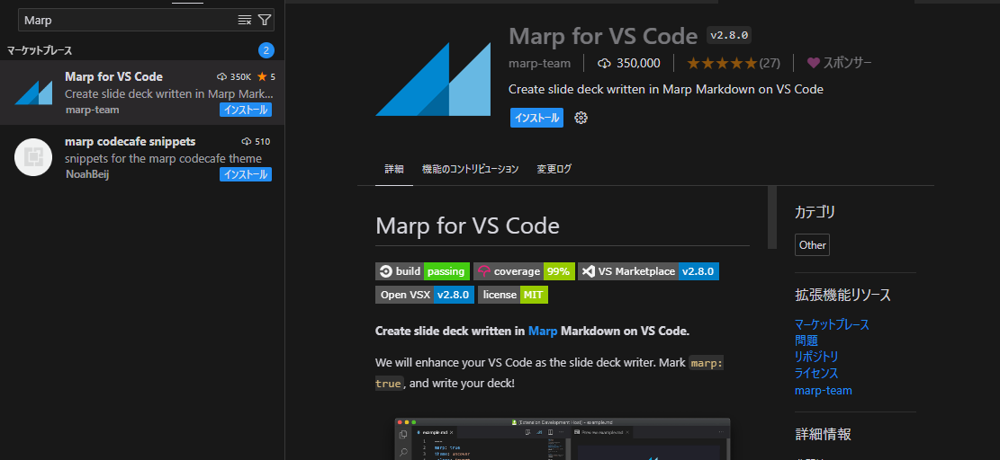
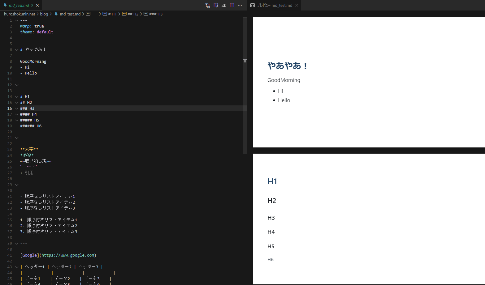

はーいこんにちは 2年ぶりの更新っす
大学でも社会でもしょっちゅうスライド資料を作る機会がありますね.
内容考えるのはまだしも、デザインや配置を考えるのは面倒っすね.
今回は楽してスライド資料を作る方法を紹介します.
今回の主役は「Marp」.
Marpの公式サイトや拡張機能の検索から、VSCodeのプラグインをゲットしましょ.
作りたい内容をそのままMarkdown形式で書いていく.
Markdownがわからない人は各自ググるかこちら.
--- marp: true theme: default --- # やあやあ！ GoodMorning - Hi - Hello --- # H1 ## H2 ### H3 #### H4 ##### H5 ###### H6 --- **太字** *斜体* ~~取り消し線~~ `コード` > 引用 --- - 順序なしリストアイテム1 - 順序なしリストアイテム2 - 順序なしリストアイテム3 1. 順序付きリストアイテム1 2. 順序付きリストアイテム2 3. 順序付きリストアイテム3 --- [Google](https://www.google.com) | ヘッダー1 | ヘッダー2 | ヘッダー3 | |------------|------------|------------| | データ1 | データ2 | データ3 | | データ4 | データ5 | データ6 | - [ ] タスク1 - [x] タスク2 - [ ] タスク3赤色のテキスト
Marpでリアルタイムにプレビューしながら編集できるので、クソわかりやすいですわよ.
今回はこんな感じで書きました.
完成したスライドはPowerPoint形式等でエクスポート可能. ボタンをポチっとなで完成ですわよ!